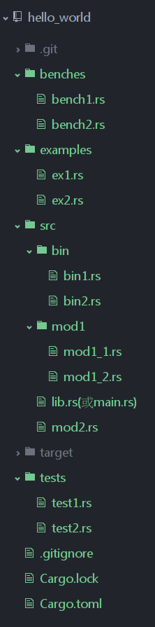

cargo簡介
曾幾何時，對於使用慣了C/C++語言的猿們來說，項目代碼的組織與管理絕對是一場噩夢。為了解決C/C++項目的管理問題，猿神們想盡了各種辦法，開發出了各種五花八門的項目管理工具，從一開始的automake到後來的cmake、qmake等等，但結果並不如人意，往往是解決了一些問題，卻引入了更多的問題，C/C++猿們經常會陷入在掌握語言本身的同時，還要掌握複雜的構建工具語法的窘境。無獨有偶，java的項目代碼組織與管理工具ant和maven也存在同樣的問題。複雜的項目管理配置參數，往往讓猿們不知所措。
作為一門現代語言，rust自然要摒棄石器時代項目代碼管理的方法和手段。rust項目組為各位猿提供了超級大殺器cargo，以解決項目代碼管理所帶來的干擾和困惑。用過node.js的猿們，應該對node.js中的神器npm、grunt、gulp等工具印象深刻。作為新一代靜態語言中的翹楚，rust官方參考了現有語言管理工具的優點，於是就產生了cargo。
言而總之，作為rust的代碼組織管理工具，cargo提供了一系列的工具，從項目的建立、構建到測試、運行直至部署，為rust項目的管理提供儘可能完整的手段。同時，與rust語言及其編譯器rustc本身的各種特性緊密結合，可以說既是語言本身的知心愛人，又是rust猿們的貼心小棉襖，誰用誰知道。
廢話就不多說了，直接上例子和各種高清無馬圖。
cargo入門
首先，當然還是廢話，要使用cargo，自然首先要安裝cargo。安裝cargo有三種方法，前兩種方法請參見rust的安裝方法，因為cargo工具是官方正統出身，當然包含在官方的分發包中。第三種方法即從cargo項目的源碼倉庫進行構建。Oh，My God。的確是廢話。
好了，假設各位已經安裝好了cargo，大家和我一起學一下起手式。當然了，猿的世界，起手式一般都千篇一律——那就是hello world大法。
在終端中輸入
$ cargo new hello_world --bin
上述命令使用cargo new在當前目錄下新建了基於cargo項目管理的rust項目，項目名稱為hello_world，--bin表示該項目將生成可執行文件。具體生成的項目目錄結構如下：
$ cd hello_world
$ tree .
.
├── Cargo.toml
└── src
└── main.rs
1 directory, 2 files
大家可以在終端中輸入上述命令，敲出回車鍵之後即可看到上述結果，或者直接去編輯器或文件管理器中去觀察即可。 打開main.rs文件，可以看到，cargo new命令為我們自動生成了hello_world運行所必須的所有代碼：
fn main() {
println!("Hello, world!");
}
好了，心急的猿們可能已經迫不及待的脫褲子了，好吧，我們先來構建並看看cargo有多神奇，在終端中輸入：
$ cargo build
稍等片刻，cargo會自動為我們構建好高清應用所需的一切，對於這個起手式來說，緩衝不會超過5秒，12秒88的選手要憋住了。
$ cargo run
Running `target/debug/hello_world`
Hello, world!
看到了什麼，看到了什麼，嚇尿了有木有，嚇尿了有木有。好了，cargo就是這麼簡單。
當然了，說cargo美，並不僅僅是簡單這麼簡單，cargo雖然簡單，但是很強大。有多麼強大？？可以說，基本上rust開發管理中所需的手段，cargo都有。很小很強大，既強又有節操，不帶馬，學習曲線幾乎為零。
基於cargo的rust項目組織結構
這次不說廢話了，先上高清無馬圖：

對上述cargo默認的項目結構解釋如下：
cargo.toml和cargo.lock文件總是位於項目根目錄下。
源代碼位於src目錄下。
默認的庫入口文件是src/lib.rs。
默認的可執行程序入口文件是src/main.rs。
其他可選的可執行文件位於src/bin/*.rs(這裡每一個rs文件均對應一個可執行文件)。
外部測試源代碼文件位於tests目錄下。
示例程序源代碼文件位於examples。
基準測試源代碼文件位於benches目錄下。
好了，大家一定謹記這些默認規則，最好按照這種模式來組織自己的rust項目。
cargo.toml和cargo.lock
cargo.toml和cargo.lock是cargo項目代碼管理的核心兩個文件，cargo工具的所有活動均基於這兩個文件。
cargo.toml是cargo特有的項目數據描述文件，對於猿們而言，cargo.toml文件存儲了項目的所有信息，它直接面向rust猿，猿們如果想讓自己的rust項目能夠按照期望的方式進行構建、測試和運行，那麼，必須按照合理的方式構建'cargo.toml'。
而cargo.lock文件則不直接面向猿，猿們也不需要直接去修改這個文件。lock文件是cargo工具根據同一項目的toml文件生成的項目依賴詳細清單文件，所以我們一般不用不管他，只需要對著cargo.toml文件擼就行了。
[package]
name = "hello_world"
version = "0.1.0"
authors = ["fuying"]
[dependencies]
toml文件是由諸如[package]或[dependencies]這樣的段落組成，每一個段落又由多個字段組成，這些段落和字段就描述了項目組織的基本信息，例如上述toml文件中的[package]段落描述了hello_world項目本身的一些信息，包括項目名稱（對應於name字段）、項目版本（對應於version字段）、作者列表（對應於authors字段）等；[dependencies]段落描述了hello_world項目的依賴項目有哪些。
下面我們來看看toml描述文件中常用段落和字段的意義。
package段落
[package]段落描述了軟件開發者對本項目的各種元數據描述信息，例如[name]字段定義了項目的名稱，[version]字段定義了項目的當前版本，[authors]定義了該項目的所有作者，當然，[package]段落不僅僅包含這些字段，[package]段落的其他可選字段詳見cargo參數配置章節。
定義項目依賴
使用cargo工具的最大優勢就在於，能夠對該項目的各種依賴項進行方便、統一和靈活的管理。這也是使用cargo對rust 的項目進行管理的重要目標之一。在cargo的toml文件描述中，主要通過各種依賴段落來描述該項目的各種依賴項。toml中常用的依賴段落包括一下幾種：
- 基於rust官方倉庫crates.io，通過版本說明來描述：
- 基於項目源代碼的git倉庫地址，通過URL來描述：
- 基於本地項目的絕對路徑或者相對路徑，通過類Unix模式的路徑來描述： 這三種形式具體寫法如下：
[dependencies]
typemap = "0.3"
plugin = "0.2*"
hammer = { version = "0.5.0"}
color = { git = "https://github.com/bjz/color-rs" }
geometry = { path = "crates/geometry" }
上述例子中，2-4行為方法一的寫法，第5行為方法二的寫法，第6行為方法三的寫法。 這三種寫法各有用處，如果項目需要使用crates.io官方倉庫來管理項目依賴項，推薦使用第一種方法。如果項目開發者更傾向於使用git倉庫中最新的源碼，可以使用方法二。方法二也經常用於當官方倉庫的依賴項編譯不通過時的備選方案。方法三主要用於源代碼位於本地的依賴項。
定義集成測試用例
cargo另一個重要的功能，即將軟件開發過程中必要且非常重要的測試環節進行集成，並通過代碼屬性聲明或者toml文件描述來對測試進行管理。其中，單元測試主要通過在項目代碼的測試代碼部分前用#[test]屬性來描述，而集成測試，則一般都會通過toml文件中的[[test]]段落進行描述。
例如，假設集成測試文件均位於tests文件夾下，則toml可以這樣來寫：
[[test]]
name = "testinit"
path = "tests/testinit.rs"
[[test]]
name = "testtime"
path = "tests/testtime.rs"
上述例子中，name字段定義了集成測試的名稱，path字段定義了集成測試文件相對於本toml文件的路徑。 看看，定義集成測試就是如此簡單。 需要注意的是:
- 如果沒有在Cargo.toml裡定義集成測試的入口，那麼tests目錄(不包括子目錄)下的每個rs文件被當作集成測試入口.
- 如果在Cargo.toml裡定義了集成測試入口，那麼定義的那些rs就是入口，不再默認指定任何集成測試入口.
定義項目示例和可執行程序
上面我們介紹了cargo項目管理中常用的三個功能，還有兩個經常使用的功能：example用例的描述以及bin用例的描述。其描述方法和test用例描述方法類似。不過，這時候段落名稱'[[test]]'分別替換為：'[[example]]'或者'[[bin]]'。例如：
[[example]]
name = "timeout"
path = "examples/timeout.rs"
[[bin]]
name = "bin1"
path = "bin/bin1.rs"
對於'[[example]]'和'[[bin]]'段落中聲明的examples和bins，需要通過'cargo run --example NAME'或者'cargo run --bin NAME'來運行，其中NAME對應於你在name字段中定義的名稱。
構建、清理、更新以及安裝
領會了toml描述文件的寫法，是一個重要的方面。另一個重要的方面，就是cargo工具本身為我們程序猿提供的各種好用的工具。如果大家感興趣，自己在終端中輸入'cargo --help'查看即可。其中開發時最常用的命令就是'cargo build'，用於構建項目。此外，'cargo clean'命令可以清理target文件夾中的所有內容；'cargo update'根據toml描述文件重新檢索並更新各種依賴項的信息，並寫入lock文件，例如依賴項版本的更新變化等等；'cargo install'可用於實際的生產部署。這些命令在實際的開發部署中均是非常有用的。
cargo更多詳細用法請參見'28. cargo參數配置'